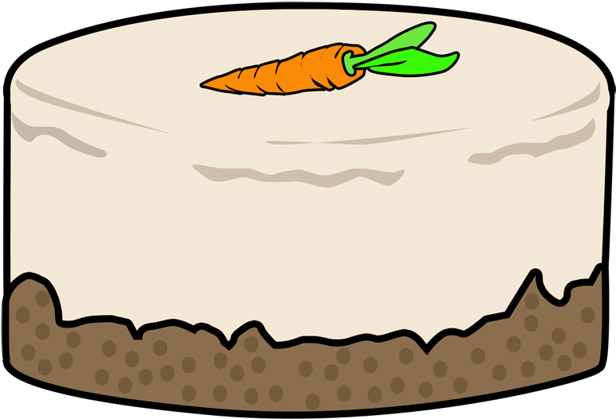

Recipe for a Carrot Cake
Ingredients
- 235ml vegetable oil, plus extra for the tin
- 100g natural yogurt
- 4 large eggs
- 1½ tsp vanilla extract
- ½ an orange, zested
- 265g self-raising flour
- 335g light muscovado sugar
- 2½ tsp ground cinnamon
- ¼ fresh nutmeg
- 265g carrots (about 3), grated
- 100g sultanas or raisins
- 100g walnuts or pecans, roughly chopped (optional)
Instructions
- Heat oven to 180C/160C fan/gas
- Oil and line the base and sides of two 20cm cake tins with baking parchment
- Whisk the oil, yogurt, eggs, vanilla and zest in a jug
- Mix the flour, sugar, cinnamon and nutmeg with a good pinch of salt in a bowl
- Squeeze any lumps of sugar through your fingers, shaking the bowl a few times to bring the lumps to the surface
- Add the wet ingredients to the dry, along with the carrots, raisins and half the nutmeg
- Mix well to combine, then divide between the tins
- Bake for 25-30 mins ountil a skewer inserted into the centre of the cake comes out clean
- If any wet mixture clings to the skewer, return to the oven for 5 mins, then check again
- Leave to cool in the tins
- To make the icing, beat the butter and sugar together until smooth
- Add half the creamcheese and beat again, then add the rest (adding it bit by bit prevents the icing from splitting)
- Remove the cakes from the tins and sandwich together with half the icing
- Top with the remaining icing and scatter with the remaining walnuts
- Will keep in the fridge for up to five days
- Best eaten at room temperature
